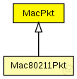

This documentation is released under the Creative Commons license
This documentation is released under the Creative Commons licenseA basic MAC (Media Access Control) packet format definition
subclass if you want to create your own MAC layer packet class
The basic MAC packet only provides source and destination address
Author: Daniel Willkomm
The following diagram shows usage relationships between types. Unresolved types are missing from the diagram. Click here to see the full picture.
The following diagram shows inheritance relationships for this type. Unresolved types are missing from the diagram. Click here to see the full picture.
| Mac80211Pkt (packet) |
Defines all fields of an 802.11 MAC frame |
| Name | Type | Description |
|---|---|---|
| destAddr | int |
destination mac address |
| srcAddr | int |
source mac address |
// A basic MAC (Media Access Control) packet format definition // // subclass if you want to create your own MAC layer packet class // // The basic MAC packet only provides source and destination address // // @author Daniel Willkomm packet MacPkt { int destAddr; // destination mac address int srcAddr; // source mac address }
This documentation is released under the Creative Commons license